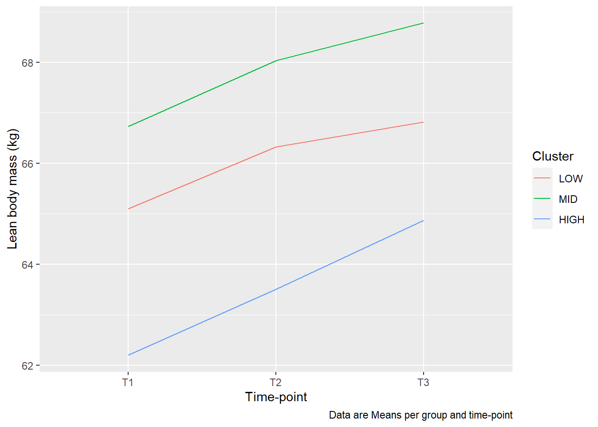

Examples in R are extremely helpful as you often do stuff that has been done before. Examples tend do give more meaning when you are using data sets that are known. In R examples, commonly used data sets are built-in in different R packages. The mtcars data set is an example of a data set used to show basic data wrangling.
The aim of this group exercise is to write R examples using a data set that we know of. I also encurage you to write in your preffered language (Norsk!).
The exercises are designed with an known outcome, what you want to achieve, from a given starting point. They represent common scenarios in data wrangling and plotting of data. All exercises uses the data set provided bu Haun et al. 2019. Write the example with a introduction of what you want to achieve with a list detailing what you will do. Write code chunks that does the operation (with short comments). If you only want to show code in your example without having R evaluate it put eval = FALSE in the code chunk label {r, eval = FALSE}. There might be suggestions in other exercises than the one written specifically for your group to help you to solve the exercise. If you finish early, try another groups exercise.
Plotting in ggplot2 often requires data to be in a long format. You are expected to write an example where changes in CSA are differentiated between fast and slow fiber types. The final figure should look something like this:
The problem is that the data set looks like this when we select the variables SUB_ID, T3T1_PERCENT_CHANGE_FAST_CSA and T3T1_PERCENT_CHANGE_SLOW_CSA:
## # A tibble: 30 x 3
## SUB_ID T3T1_PERCENT_CHANGE_FAST_CSA T3T1_PERCENT_CHANGE_SLOW_CSA
## <chr> <dbl> <dbl>
## 1 MRV001 14.7 -12.3
## 2 MRV002 16.2 10.0
## 3 MRV003 39.8 14.8
## 4 MRV004 -2.55 12.0
## 5 MRV005 59.7 63.6
## 6 MRV006 -6.87 -18.2
## 7 MRV007 7.7 -12.5
## 8 MRV009 25.7 3.1
## 9 MRV010 -0.63 -3.38
## 10 MRV011 45.4 26.6
## # ... with 20 more rowsAnd before plotting, we would like it to look like this:
## # A tibble: 60 x 3
## SUB_ID fibertype change
## <chr> <chr> <dbl>
## 1 MRV001 T3T1_PERCENT_CHANGE_FAST_CSA 14.7
## 2 MRV001 T3T1_PERCENT_CHANGE_SLOW_CSA -12.3
## 3 MRV002 T3T1_PERCENT_CHANGE_FAST_CSA 16.2
## 4 MRV002 T3T1_PERCENT_CHANGE_SLOW_CSA 10.0
## 5 MRV003 T3T1_PERCENT_CHANGE_FAST_CSA 39.8
## 6 MRV003 T3T1_PERCENT_CHANGE_SLOW_CSA 14.8
## 7 MRV004 T3T1_PERCENT_CHANGE_FAST_CSA -2.55
## 8 MRV004 T3T1_PERCENT_CHANGE_SLOW_CSA 12.0
## 9 MRV005 T3T1_PERCENT_CHANGE_FAST_CSA 59.7
## 10 MRV005 T3T1_PERCENT_CHANGE_SLOW_CSA 63.6
## # ... with 50 more rowsA suggestion is to look into the help pages describing pivot_longer and pivot_wider and describe their use.
To get started, here is example code for downloading and selecting the variables:
library(tidyverse)
hypertrophy <- read_csv("https://ndownloader.figstatic.com/files/14702420")
hypertrophy %>%
select(SUB_ID, T3T1_PERCENT_CHANGE_FAST_CSA, T3T1_PERCENT_CHANGE_SLOW_CSA) %>%
print()Use geom_boxplot() in ggplot2 to create the graph. You are free to nmake the plot nicer, consider the following:
fibertypeBefore plotting data it is common to do some kine of summary of the data. In ggplot2, some “geoms” does this for you but not all. In this example you are expected to describe how to summarize data and use point estimates with some measure of variation in the graph. The final figure should look something like this:
This is a case of group_by and summarise.
Things to consider:
mutate(CLUSTER = if_else(is.na(CLUSTER), "MID", CLUSTER)))\u00B1 in the labs function in ggplot)To plot variables over time we need to create a long data set. We are here interested in plotting lean body mass over time, the data are now stored in the variables DXA_LBM_1, DXA_LBM_2 and DXA_LBM_3, where 1, 2 and 3 are time-points in the study. We also would like to separate the plotting per group, including a “MID” group. The resulting plot should look something like this.

Things to consider:
labs in ggplot2 documentation)?pivot_longer,group_by and summarise, make sure to use a group and time variable for groupingaes(), grouping needs to be set to cluster (group = CLUSTER) to make lines between data points.